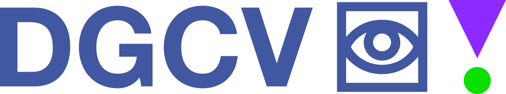
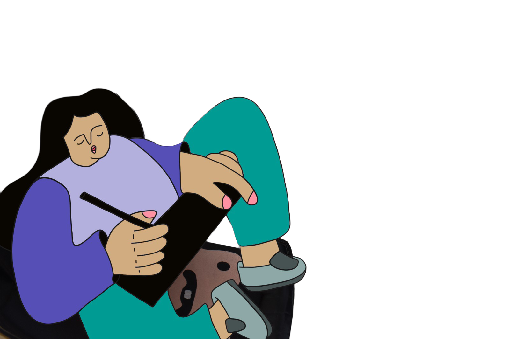

Misión
Formar profesionales capaces de responder a las necesidades de la sociedad.


Formación creativa, crítica y estratégica para transformar mensajes en experiencias visuales que conectan con las personas.
ConoceFormar profesionales capaces de responder a las necesidades de la sociedad.
Ser una carrera referente en formación, investigación e interacción social.
Impulsar una formación crítica y creativa para el desarrollo del país.
Una carrera que integra diseño, comunicación, tecnología, investigación y cultura.
La investigación fortalece la producción de conocimiento desde nuestro contexto.